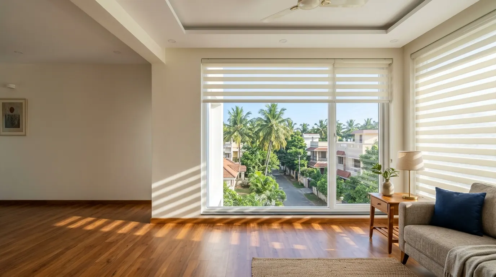
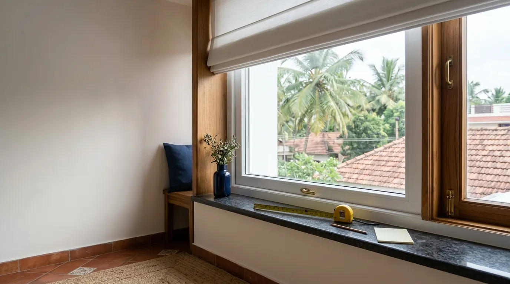
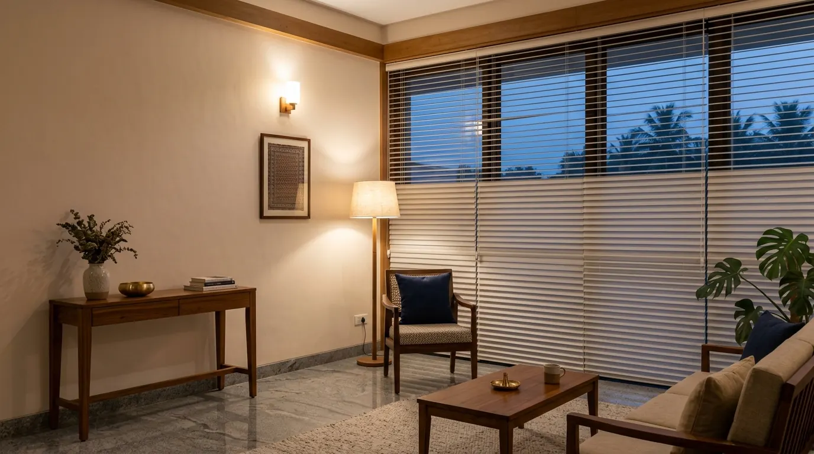

Roller blinds
₹2,400 to ₹3,150 for one window
Bedrooms and everyday windows. Blackout fabric for a dark room.
See it on my window →Preview only. Rates are real starting rates, but nothing you enter reaches Window Works, and product advice is still to be checked by them.
Eleven kinds, made to measure, from ₹55 per sq ft before GST. See the price for your own window right here.

Type your size and all 11 prices change. No number or sign-up needed for this.
₹2,400 to ₹3,150
Plus GST. Counted as 30 sq ft per window. A guide from starting rates. The final price comes after we measure at your home.
₹2,400 to ₹3,150 for one window
Bedrooms and everyday windows. Blackout fabric for a dark room.
See it on my window →₹9,000 to ₹11,700 for one window
Bedrooms and rooms that catch the sun. Soft, filtered light.
See it on my window →₹3,600 to ₹4,700 for one window
Living rooms, dining rooms and bedrooms. Bands slide from open to closed.
See it on my window →A starting point. At your home we show you the catalogues and settle it together.
Simple to use and easy on the budget, for bedrooms, living rooms and offices.
₹55 / sq ft
Long slats hang from a track and part to one side. They suit tall or wide glass, because you can open only the part you walk through. This is our lowest starting rate.
Best for: tall windows, sliding doors and offices
₹80 / sq ft
One flat sheet of fabric rolls up out of sight, so the window looks clean when it is open. Choose a blackout fabric when a room needs to go properly dark.
Best for: bedrooms and everyday windows
₹120 / sq ft
Sheer and solid bands slide past each other. Line the sheer bands up for daylight and a view, or the solid bands for privacy, without lifting the blind.
Best for: living rooms, dining rooms and bedrooms
₹150 / sq ft
Horizontal slats tilt to let in exactly as much light as you want, so you can stop glare on a screen and still see outside.
Best for: studies and offices
Fabric folds, a wooden look and softer light, for the rooms you spend your evenings in.
₹225 / sq ft
Soft fabric folds up in neat, even pleats and stays on show when the blind is open. It brings the warmth of a curtain to a window that has no room for one.
Best for: living and dining rooms
₹280 / sq ft
Wide wooden slats give a warm, solid look that sits well with teak furniture and wooden floors. Tilt them through the day to follow the sun.
Best for: studies and living rooms
₹300 / sq ft
Pleated cells hold a layer of air against the window, for softer light and a cooler room. This is our energy-saving choice for rooms that catch the afternoon sun.
Best for: bedrooms and rooms that catch the sun
Built for wide openings, terraces, verandas and the rain.
₹280 / sq ft
Waterproof outdoor blinds for the balconies and verandas that catch the rain. Lower them when the weather turns, and roll them away when it clears.
Best for: balconies and verandas
₹420 / sq ft
Wide fabric panels glide along a track and stack neatly to one side. They make a calm, modern wall of fabric across a large opening.
Best for: wide glass and sliding doors
₹1,200 / sq ft
The blind is built into the glass unit, so there is nothing to dust and nothing for hands to catch. It suits glass doors and partitions that need to stay spotless.
Best for: glass doors and glass partitions

₹780 / sq ft
Outdoor blinds zipped into metal side channels, so the fabric holds against wind and weather. They turn a terrace or sit-out into a room you can use all year.
Best for: terraces, patios and sit-outs
Window Works prints blinds, curtains and sheers to your choice, with a range of designs to match your room. Tell us the look you want when we visit.
| Blind | From, per sq ft | How it controls light | Best for | Outdoors |
|---|---|---|---|---|
| Vertical blinds | ₹55 | Slats turn, and slide aside | Tall windows, sliding doors and offices | No |
| Roller blinds | ₹80 | Blackout fabric for a dark room | Bedrooms and everyday windows | No |
| Zebra blinds | ₹120 | Bands slide from open to closed | Living rooms, dining rooms and bedrooms | No |
| Venetian blinds | ₹150 | Tilt the slats to any angle | Studies and offices | No |
| Roman blinds | ₹225 | Fabric lifts in soft folds | Living and dining rooms | No |
| Wooden blinds | ₹280 | Tilt the slats to any angle | Studies and living rooms | No |
| Monsoon blinds | ₹280 | Keeps rain out, lets light in | Balconies and verandas | Yes |
| Honeycomb blinds | ₹300 | Soft, filtered light | Bedrooms and rooms that catch the sun | No |
| Panel blinds | ₹420 | Panels glide along a track | Wide glass and sliding doors | No |
| External zipper blinds | ₹780 | Weatherproof, held in side channels | Terraces, patios and sit-outs | Yes |
| Insulated glass blinds | ₹1,200 | Raises and lowers inside the glass | Glass doors and glass partitions | No |
Starting rates before GST. Your fabric and fittings decide the final figure.
Run a tape across the window, from one side of the frame to the other.
Then go from the top of the frame to the bottom. A rough figure is fine.
Windows that look the same often differ a little, so measure each one if you can.
Your figure is only for the rough price. We measure again at your home before the final price.

Videos from Window Works, including a look inside our factory.
Jumbo Roman blinds
At Window Works, blinds start from ₹55 per sq ft for vertical blinds and ₹80 for roller blinds, up to ₹1,200 for insulated glass blinds, all before GST. Enter your window size on this page to see a rough price for every type.
Vertical blinds have our lowest starting rate at ₹55 per sq ft, followed by roller blinds at ₹80 and zebra blinds at ₹120, before GST.
Roller blinds in a blackout fabric are the usual choice. Honeycomb blinds are a softer option that also help keep a sunny room cooler.
Monsoon blinds are made for balconies and verandas that catch the rain. External zipper blinds are held in side channels against wind and weather, for terraces and patios.
No. We do not run an outlet, and that saving goes to you. We bring the catalogues to your home so you can see each fabric against your own walls.
No, it is a rough guide based on our starting rates, plus GST. Your fabric and fittings decide the final figure, and we confirm it after measuring at your home.
For the rough price, any blind smaller than 10 sq ft is counted as 10 sq ft.
Yes. Window Works prints blinds, curtains and sheers to your own theme, with a range of designs to match your room.
Yes, we have fitted motorised blinds, including on patios. Ask our team what suits your window, as the cost depends on the blind and its size.

Get your rough price, then our team will call to book a visit at your home in Coimbatore. There’s no charge for the estimate.
19, G.R.D Layout, A.A. Scheme Road, RS Puram, Coimbatore 641002See everything against your own wall colours before you order.
Our team visits and takes every measurement with you there.
Processed and checked at our factory, then fitted and inspected at your home.
We don’t carry the cost of running an outlet, and that benefits you.